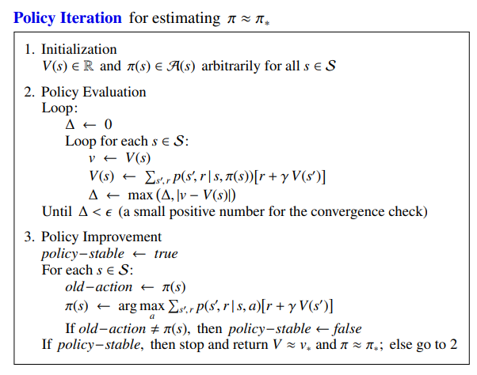
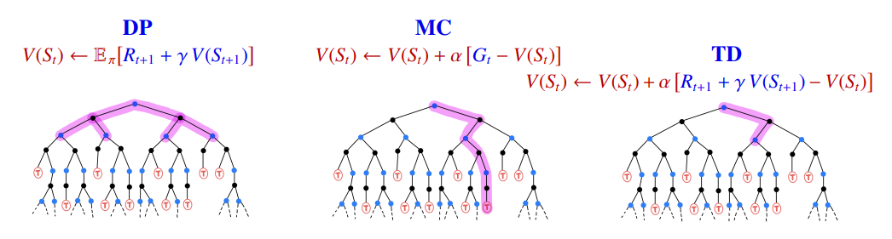
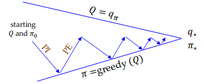
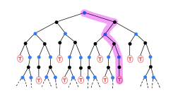
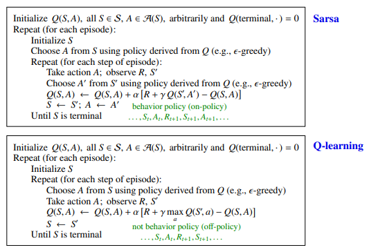
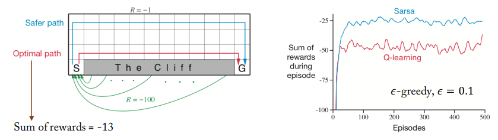

최종 보상을 최대로 만드는 각 state에서의 action을 선택하고자 한다(optimal policy)
Action의 선택에 대해서 두 가지 방식으로 적용할 수 있다.
1. deterministic: output이 현재 state와 action에 의해서만 결정된다.
2. stochastic: 같은 state와 action이 랜덤성을 가지고 여러 outputs을 만들 수 있다.
Stochastic process {St}는 Markov property를 만족하면 Markov process라고 한다.
이 때, P(St+1=s′∣St=s)을 statetransition probability from s to s’ 라고 한다.
Markov process는 tuple (S, P)로 나타낸다. 여기서 S는 state의 set이고, P는 state transition probability matrix [Pij]=P(St+1=sj∣St=si)이다.
Markov Decision Process(MDP)
MDP는 tuple (S,A,P,R,γ)로 나타낼 수 있다.
여기서 P는 기존의 MP에서 action a가 주어졌을 때의 transition probability를 나타낸다.
R은 reward function으로 Rss′a는 s에서 s’으로 이동했을 때 얻어지는 보상을 의미한다.
γ는 discount factor이다.
MDP에서 model이란 transition probability를 의미한다.
1. Model based = known MDP: P matrix를 알고 있는 경우이다 ⇒ Dynamic Programming
2. Model-free = unknown MDP: P matrix를 모르는 경우이다 ⇒ Reinforcement Learning
Reward
RL은 reward hypothesis를 가정하여 MDP에서 cumulative rewards를 최대화하려고 한다.
Reward Hypothesis: 모든 goals는 maximization of the expected value of the cumulative sum of rewards로 나타낼 수 있다.
Reward function의 종류는 다양한데 예를 들어 바둑의 경우 매 step마다 보상을 줄 수 없기 때문에 게임이 끝났을 때 보상을 주고, 탁구의 경우 매 step마다 보상을 줄 수 있다.
Dynamics p(s′,r∣s,a)를 알고 있으면 state transition probability를 계산할 수 있다.
P(st+1=s′∣St=s,At=a)=r∈R∑p(s′,r∣s,a)
또한 reward 함수의 종류에 따라 다음과 같이 보상을 계산할 수 있다.
1. (s, a)
이 때, optimal state-value function을 보면 state마다 optimal function이 달라질 수 있다.
Policy의 partial ordering을 다음과 같이 정의한다.
π′≥π if vπ′(s)≥vπ(s) for all s
MDP 환경에서 다음과 같은 정리가 성립한다.
1. optimal policy π∗≥π for all π가 존재한다.
2. 모든 optimal policy는 optimal value function을 만족한다.
vπ∗(s)=v∗(s)qπ∗(s,a)=q∗(s,a)
q∗(s,a)를 최대화하여 optimal policy를 구할 수 있다.
π∗(a∣s)={10if a=argmaxaq∗(s,a)otherwise
즉, MDP에서는 optimal policy가 deterministic이다.
vπ(s)=∑aπ(a∣s)qπ(s,a)이기 때문에 v∗(s)=maxaq∗(s,a)가 성립한다.
q∗(s,a)=r(s,a)+γ∑s′p(s′∣s,a)v∗(s′)도 성립하는 것을 알 수 있다.
이를 통해서 v∗(s)는 q∗(s,a)로부터 구할 수 있지만 q∗(s,a)는 v∗(s)로부터 구할 수 없다.
q∗(s,a)는 추가적으로 p(s′∣s,a)를 알아야 구할 수 있다(model-based)
따라서 model-free(RL)의 경우 optimal policy를 구하기 위해 Q(s,a)를 구해야 한다.
만약 모든 s에 대해 Qπ(s,π′(s))≥Vπ(s),Vπ′(s)≥Vπ(s)이면, π′는 π보다 좋다.
따라서 policy improvement 과정을 거치면 policy가 더 좋아진다.

마지막 부분을 보면 중간에 optimal policy가 결정되면 반복을 멈춘다.
Reinforcement Learning
RL에는 Monte Carlo(MC)와 Temporal Difference(TD)가 있다.
이를 기존의 DP 방식과 비교하면 다음과 같다.

DP에서는 state 양이 많아서 Gt를 계산하지 못했었는데, MC를 보면 sample data를 사용하기 때문에 계산할 수 있는 것을 확인할 수 있다.
DP와 RL은 모두 tabular updating methods이다. Value function 표를 만들고 Bellman equation을 계산하여 optimal policy를 구한다.
DP에서는 table의 value를 full backup을 통해서 업데이트 한다. 그래서 Q(s,a)의 경우 V(s)에 비해 크기가 크기 때문에 VI에서는 주로 V(s)를 사용한다. V(s)를 통해 policy를 상향시키기 위해서는 known MDP가 필요하다.
π′(s)=aargmaxs′,r∑p(s′,r∣s,a)[r+γVπ(s′)]
RL은 sample backup을 통해서 일부 values를 업데이트 한다. 또한 Q(s,a)를 사용하여 optimal policy를 결정한다. Q(s,a)를 사용하여 model-free 환경에서도 policy를 상향시킬 수 있다.
π′(s)=aargmaxQπ(s,a)
RL은 sample backup을 사용하기 때문에 curse of dimensionality를 고려하지 않아도 된다.
Generalized Policy Iteration(GPI)
Policy iteration은 두 가지 processes가 번갈아 반복한다.
- Policy evaluation은 현재 policy에 대한 value function을 구한다.
- Policy improvement는 policy를 발전시킨다.
기존에는 다른 process가 끝나야 시작을 했는데(full backup) 이는 실제로 불필요하다.
그래서 GPI는 approximated value function을 사용하여(sample backup) optimal policy를 구한다.

대부분의 RL 방식은 GPI를 사용한다.
Monte Carlo method(MC)
MC도 tabular updating을 사용한다(action-value function: Q-table).
Q value를 사용하기 때문에 model-free이다.
MC는 PE에서 episode-by-episode(sample multi-step backup)을 사용하고, PI에서 ϵ-greedy를 사용하여 Q값을 구한다.

Sample의 episodes에 대해 return의 평균값으로 value를 구하기 때문에 이러한 방식은 바둑과 같은 환경에도 적용할 수 있다. 또한 추정치를 통해 또 다른 추정치를 업데이트(Bootstrapping) 하지 않기 때문에 Markov property가 성립하지 않아도 큰 영향이 없다.
MC Prediction(PE)
Policy π에 대해서 entire episodes of real experience를 통해 qπ를 계산하고자 한다.
qπ(s,a)=Eπ[Gt∣St=s,At=a]인데 MC는 expected return 대신에 empirical mean을 사용한다. 첫 번째 (s,a)에 대해서만 return을 계산하는 first-visit 방식과 전체 return에 대해서 계산하는 Every-visit 방식이 있다.
개수 n(s,a)와 return S(s,a)를 기록하여 Q(s,a)=n(s,a)S(s,a)로 value를 추정한다.
큰 수의 법칙에 의해 n(s,a)가 커질수록 Q(s,a)→qπ(s,a)이다.
Incremental Monte Carlo updates
Incremental mean: partial mean μk of sequence x1,x2,⋯을 점진적으로 계산한다.
Sarsa는 Bellman expectation 공식을 사용하고 Q-learning은 Bellman optimality 공식을 사용한다.
Sarsa와 Q-learning의 알고리즘은 다음과 같다.

Sarsa는 ϵ-greedy policy를 사용하기 때문에 near-optimal policy를 얻고, Q-learning의 경우 optimal policy만 얻는다. 따라서 Sarsa가 더 안전한 방식을 택해서 경우에 따라 성능이 좋다.

Double Q-learning
Q-learning은 maximization을 사용하기 때문에 Q가 overestimated되는 문제가 있다. 그래서 두 개의 Q function을 사용하여 maximization이 적용되는 Q function과 추정치를 구하는 Q function이 다르기 때문에 overestimate 문제를 방지할 수 있다.
여기서 q(x)p(x)를 importance weight라고 한다.
Importance sampling을 통해 on-policy를 off-policy로 바꿀 수 있다.
이를 통해 on-policy MC와 TD를 off-policy로 바꿀 수 있다.
- Off-policy MC: using target returns Gt generated from μ to evaluate π
Gtπ/μ=ρtTGt=(k=t∏T−1μ(Ak∣Sk)π(Ak∣Sk))Gt
Q(St,At)←Q(St,At)+α[Gtπ/μ−Q(St,At)]
Off-policy TD: using targets Rt+1+γQ(St+1,At+1) generated from μ
TD의 경우 한 번의 step에만 곱해주면 되기 때문에 MC에 비해 더 작은 variance를 가진다.
Bias vs Variance
Bias: 추정치의 평균과의 차이
Variance: 얼마나 흩어져 있는지
Gt는 unbiased estimate of q(S,A)이기 때문에 MC는 unbiased이다.
TD는 estimate R+γQ(S,A)가 biased이다.
하지만 MC는 Gt가 많은 random action에 영향을 받기 때문에 variance가 크고 TD는 하나의 step에만 영향을 받아서 variance가 작다. 그래서 MC는 일반적으로 느리게 수렴한다.